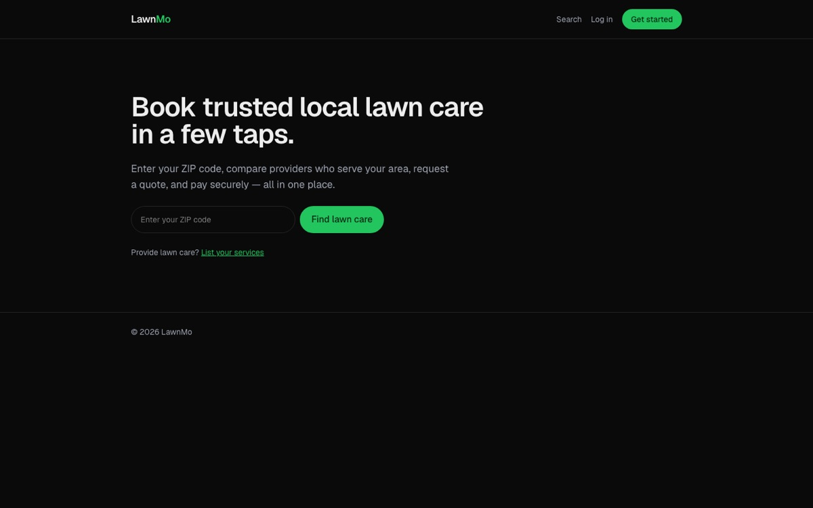

lawnmo.vercel.app

LawnMo
A marketplace connecting homeowners with local lawn care providers: search by ZIP, request a booking, approve a firm quote, and pay in-app. Providers manage bookings and receive payouts automatically.
- Payments architecture on Stripe Connect. A payment method is validated with a SetupIntent at quote approval, then charged off-session on job completion as a destination charge, with the platform fee split at the source.
- Role-based auth with data kept in-house. Customer, provider and admin roles live on the user record in Postgres, with no third-party identity sync and no per-user licensing cost.
- Built to scale the team, not just the app. Schema migrations from day one, preview-environment database branching, and every architectural tradeoff documented in the repo.